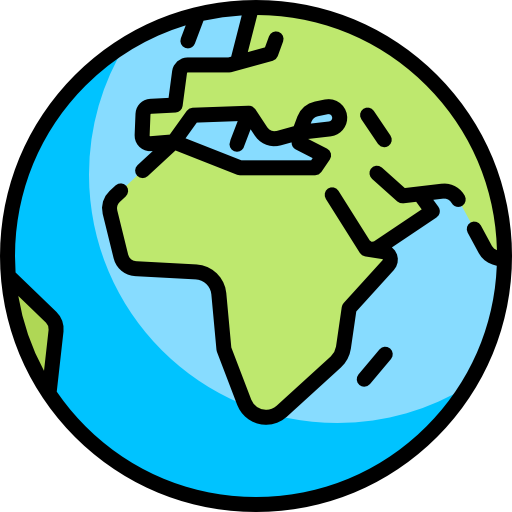

<!DOCTYPE html>
<html>

<head>
  <meta charset="UTF-8">
  <title>Leaflet Nüfus Haritası</title>
  <meta name="viewport" content="width=device-width,initial-scale=1.0">
  <meta http-equiv="X-UA-Compatible" content="ie=edge">
  <link rel="icon" href="src/img/yusufalbeni.png">
  <link rel="stylesheet" href="src/css/leaflet.css">
  <script src="src/js/leaflet.js"></script>
  <script src="src/js/iller_polygon.js" type="text/javascript"></script>
  <script src="src/js/iller_nokta.js" type="text/javascript"></script>
</head>

<body style="background:linear-gradient(to right, #00467f, #a5cc82);">

  <div id="map" style="position: absolute;margin: auto; top: 0; right: 0; bottom: 0; left: 0; height:100vh;"></div>

  <script>
    var map = L.map('map', {
      zoomControl: false
    }).setView([40.0100708, 34.9986292], 5, );

    var layer1 = L.tileLayer('http://services.arcgisonline.com/arcgis/rest/services/Canvas/World_Light_Gray_Base/MapServer/tile/{z}/{y}/{x}')
    var layer2 = L.tileLayer('https://server.arcgisonline.com/ArcGIS/rest/services/World_Imagery/MapServer/tile/{z}/{y}/{x}')
    var layer3 = L.tileLayer('http://services.arcgisonline.com/arcgis/rest/services/Canvas/World_Dark_Gray_Base/MapServer/tile/{z}/{y}/{x}')
    var layer4 = L.tileLayer('http://services.arcgisonline.com/arcgis/rest/services/Ocean/World_Ocean_Base/MapServer/tile/{z}/{y}/{x}')
    var layer5 = L.tileLayer('https://maps.heigit.org/openmapsurfer/tiles/roads/webmercator/{z}/{x}/{y}.png')

    var baseMaps = {
      "Temel": layer1,
      "Uydu": layer2,
      "Gece": layer3,
      "Okyanus": layer4,
      "Fiziki": layer5
    };
    L.control.layers(baseMaps, null, {
      collapsed: false,
      position: 'bottomleft'
    }).addTo(map);
    layer1.addTo(map);


    function highlightFeature(e) {
      var layer = e.target;
      info.update(layer.feature.properties);

      layer.setStyle({
        weight: 2,
        color: 'red',
        dashArray: '5',
        fillOpacity: 0.6
      });

      if (!L.Browser.ie && !L.Browser.opera && !L.Browser.edge) {
        layer.bringToFront();
      }
    }

    function resetHighlight(e) {
      geojson.resetStyle(e.target);
      info.update();
    }

    function zoomToFeature(e) {
      map.fitBounds(e.target.getBounds());
    }

    function onEachFeature(feature, layer) {
      layer.on({
        mouseover: highlightFeature,
        mouseout: resetHighlight,
        click: zoomToFeature
      });
    }

    var info = L.control();

    info.onAdd = function(map) {
      this._div = L.DomUtil.create('div', 'info');
      this.update();
      return this._div;
    };

    info.update = function(props) {
      this._div.innerHTML = '<h4>Türkiye Nüfus Haritası</h4>' + '</b><br />' + (props ?
        '<b>' + props.name + '</b><br />' + '</b><br />' + 'Nüfus:' + props.population :
        '<b>' + 'Bir İl Seçin');
    };

    info.addTo(map);

    var myStyle = {
      "color": "#1785FB",
      "weight": 2,
      "opacity": 0.9,
      "fillOpacity": 0.05
    };

    var north = L.control({
      position: "bottomright"
    });
    north.onAdd = function(map) {
      var div = L.DomUtil.create("div", "info legend");
      div.innerHTML = '<a href="https://yusufalbeni.me"target="_blank">';
      return div;
    }
    north.addTo(map);

    var geojson = L.geoJSON(iller_polygon, {
      style: myStyle,
      onEachFeature: onEachFeature
    }).addTo(map);

    var geojsonMarkerOptions = {
      radius: 3,
      fillColor: "#ff7800",
      color: "#000",
      weight: 1,
      opacity: 1,
      fillOpacity: 0.8
    };

    var ilnokta1 = L.geoJSON(iller_nokta, {
      pointToLayer: function(feature, latlng) {
        return L.circleMarker(latlng, geojsonMarkerOptions);
      }
    }).addTo(map);
  </script>

</body>

</html>
